canvas是HTML5中专门用来绘制图形的元素。在页面上放置一个canvas元素就相当于创建了一个画布。绘制过程由JS脚本完成。首先在页面上添加一个canvas元素：
1 |
|
基本步骤
使用canvas绘制图形的几个基本步骤：
1.获取canvas对象：
1 | var canvas = document.getElementById("canvas"); |
2.取得上下文context，其包含许多绘制的方法：
1 | var context = canvas.getContext("2d"); |
目前仅有2d参数可选。
3.设置绘图样式：
绘图样式主要包含图形填充样式fillStyle，图形边框样式strokeStyle和线宽lineWidth。
1 | //设置填充样式为红色 |
4.开始绘制图形：
具体绘制方法下面陆续展开。
绘制矩形
使用fillRect方法与strokeRect方法来绘制矩形和矩形边框：
1 | context.fillRect(x,y,width,height); |
x，y为矩形左上角起点坐标，width为矩形宽，height为矩形高。
开始绘制：
1 | var canvas = document.getElementById("canvas"); |
结果：
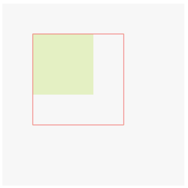
关于矩形，还有一个clearRect方法，用于清除指定矩形区域像素：
1 | context.clearRect(x,y,width,height); |
在上面的JS脚本中加入下面这行代码：
1 | context.clearRect(50,50,50,50); |
效果：

绘制圆形，扇形，椭圆
绘制圆形主要多了开始创建路径beginPath和关闭路径closePath这两个过程。
主要步骤：
1.开始创建路径：
1 | context.beginPath(); |
2.绘制圆形路径：
方法：
1 | context.arc(x,y,r,sAngle,eAngle,anticlockwise); |
其中x，y为绘制圆形的起点坐标即圆心，r为圆形半径，sAngle（起始角）和eAngle（结束角）决定了圆的弧度，两者的连线决定了圆的形状，anticlockwise表示是否按逆时针方向绘制，为boolean类型。
3.关闭路径：
1 | context.closePath(); |
- 设置填充样式。
绘制圆形示例：
1 | var canvas = document.getElementById("canvas"); |
度与弧度换算：1° = 1/180π rad
效果如下图所示：
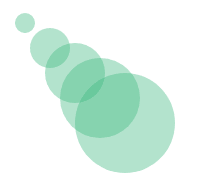
假如不关闭路径会怎样呢？将上面的代码改为：
1 | for(var i = 0;i < 6; i++){ |
效果如下图所示：
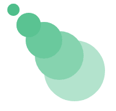
不关闭路径将会导致再绘制第二个圆的时候，第一个圆会根据之前的路径再次绘制一次。所以在这个例子中，第一个圆绘制了5次，第二个圆绘制了4次，以此类推，以至于第一个圆的颜色最深。
关于弧度的参考可见下图：

顺时针和逆时针的差别举个例子说明：
顺时针，弧度为0.5rad：
1 | context.beginPath(); |
效果如下图：
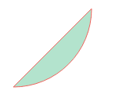
将false改为true，即逆时针时：
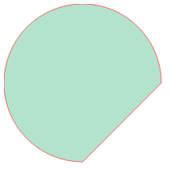
椭圆的绘制公式如下：
1 | context.ellipse(x, y, radiusX, radiusY, rotation, startAngle, endAngle, anticlockwise); |
其中x，y为起始坐标，radiusX为椭圆横向半径，radiusY为椭圆纵向半径，rotation为椭圆顺时针旋转角度，startAngle（起始角）和endAngle（结束角）决定了圆的弧度，两者的连线决定了圆的形状，anticlockwise表示是否按逆时针方向绘制，为boolean类型。
绘制一个简单的椭圆：
1 | context.beginPath(); |
效果图：
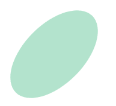
绘制直线
与绘制直线有关的方法主要有两个：
1 | context.moveTo(x,y); |
moveTo方法将绘制光标移动到x，y位置。
1 | context.lineTo(x,y); |
lineTo方法将从当前光标位置开始，到x，y位置间绘制一条直线。多次调用该方法，则下一次的起点为上一次lineTo的终点。
使用lineTo方法结合数学公式，绘制一个复杂的图案：
1 | var dx = 150; |
效果图：
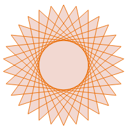
图形上下文的lineCap属性可为直线添加线帽，可用的属性有：
butt，默认值，不为直线添加线帽。
round，添加圆形线帽。
square，添加方形线帽。
例如：
1 | context.strokeStyle = "rgba(66,185,131,0.6)"; |
效果：
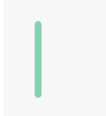
图形上下文的lineJoin属性指定两条线交汇处的形状，可用的值有：
miter，默认值，尖角拐角。
round，圆角拐角。
bevel，斜角拐角。
例如：
1 | context.strokeStyle = "rgba(66,185,131,0.6)"; |
效果图：
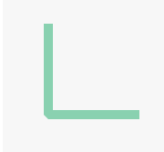
图形上下文的setLineDash方法可设置虚线的样式：
1 | context.setLineDash(segments); |
segments为一个数组。数组长度可分为4种情况：
1.当数组长度为1时：
1 | context.setLineDash([5]); |
表示线段长度为5，线段间距离也为5。
2.当数组长度为2时：
1 | context.setLineDash([5,10]); |
表示线段长度为5，线段间距离为10。
3.当数组长度为大于2的偶数时：
1 | context.setLineDash([5,10,15,20]); |
第奇数个数值表示线段长度，第偶数个数值表示线段间距。
4.当数组长度为大于1的奇数时：
1 | context.setLineDash([5,10,15]); |
浏览器会将其解析为：
1 | context.setLineDash([5,10,15,5,10,15]); |
画个虚线试试：
1 | context.strokeStyle = "rgba(66,185,131,0.9)"; |
效果：
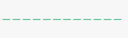
绘制曲线
绘制曲线使用arcTo方法：
1 | context.fillRect(x1,y1,x2,y2,radiusX[radiusY,rotation]); |
关于坐标参数，可以参考下面这张图：
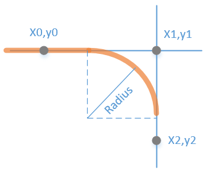
其中x0，y0为当前点的坐标，x1，y1为绘制圆弧时使用的控制坐标，x2，y2为重点坐标。radiusX为圆弧的半径。radiusY和rotation为隐藏参数，前者表示纵向半径，后者表示顺时针旋转角度。
绘制个曲线图：
1 | context.strokeStyle = "rgba(66,185,131,0.9)"; |
效果图：
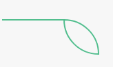
图形上下文的bezierCurveTo方法用以三次绘制贝塞尔曲线。
1 | context.bezierCurveTo(cp1x,cp1y,cp2x,cp2y,x,y); |
其中cp1x为第一个贝塞尔控制点的 x 坐标，cp1y为第一个贝塞尔控制点的 y 坐标。cp2x为第二个贝塞尔控制点的 x 坐标，cp2y为第二个贝塞尔控制点的 y 坐标。x，y为终点坐标。
例如：
1 | context.strokeStyle = "rgba(66,185,131,0.9)"; |
效果图：
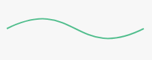
贝塞尔曲线在线生成工具：http://www.j--d.com/bezier
图形上下文的quadraticCurveTo方法用以二次绘制贝塞尔曲线：
1 | context.quadraticCurveTo(cpx,cpy,x,y); |
相较于bezierCurveTo方法，其只有一个控制点。cpx，cpy为控制点的坐标，x，y为终点坐标。
一个简单的例子：
1 | context.strokeStyle = "rgba(66,185,131,0.9)"; |
效果图：
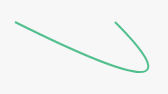
《HTML5与CSS3权威指南》读书笔记